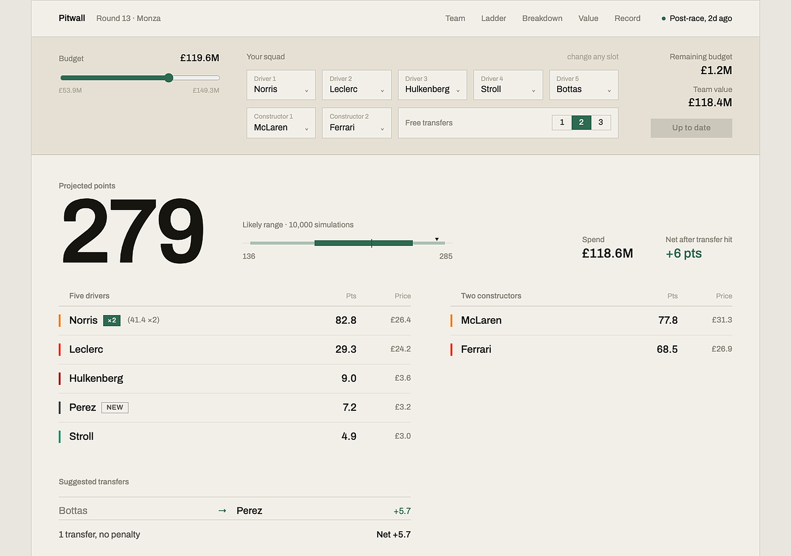

Data Science & Optimisation
02 / Project
Overview
F1 Fantasy has you draft five drivers and two constructors under a hundred-million budget, one driver doubled as captain for double points, with only two free transfers a round before extra moves cost ten points each. This project builds the full pipeline behind that decision: models that forecast qualifying and race outcomes from historical and practice data, and an integer program that turns those forecasts into the provably best legal team, not just a plausible one.
It runs as a live web app, Pitwall, that has picked a team for every round of the 2026 season without me touching it: a GitHub Actions pipeline re-ingests each session as it happens and pushes fresh predictions straight to production. The rest of this page walks through how it's built; three sub-pages go deeper into the prediction models, the probabilistic scoring layer, and the optimiser itself.
Pipeline
Ingest pulls race, qualifying, practice, sprint and pit stop data from FastF1; clean validates it against pandera schemas before anything downstream can see it. Features are engineered across three timeframes: rolling driver and constructor form, FP2/FP3 practice pace, and circuit-level effects like overtake difficulty and DNF rate. Two XGBoost models predict qualifying and finish position; three separate probabilistic models estimate fastest lap, Driver of the Day, and overtakes. Compose combines all of it into expected fantasy points per the game's own scoring rules, and optimise solves the team-selection problem as an integer program under budget, roster, and transfer constraints.
Every stage is a Typer CLI command, independently runnable and independently testable: the same commands a developer runs locally are what the CI pipeline calls in production.
Headline results
The oracle is the best legal team any manager could have picked for a round, chosen with hindsight after results are known: the real ceiling, not a strawman. Measured against it across every round of the 2026 season, the model has scored 2,713 of a possible 3,829 points, 71% of the oracle on average, ranging from 97% at its best round (round 10) down to 13% at its worst (round 6).
The walk-forward backtest runs this every round, worst included, against two naive baselines: repeating last round's picks, and a season-mean prior. All three play by the same rules, same budget, same transfers, so beating them isn't a matter of an easier problem. It has beaten both in every round of 2026 so far.
Plotted from the live track-record data behind Pitwall: the same numbers behind the figures above, graded in public every round.
Go deeper
The XGBoost models behind quali and finish position, the walk-forward season splits that keep training honest, and the backtest harness that grades every round against the oracle and two baselines. Full season-by-season results included, not just the average shown here.
Read more →Three separate probability models for fastest lap, Driver of the Day, and overtakes, plus a calibrated Monte Carlo layer that turns a point estimate into a likely range. Covers how each was calibrated against historical outcomes, and where the layer wasn't good enough to trust with selection.
Read more →The integer program that turns predictions into a legal, budget-constrained team, including the captain bonus and transfer penalty terms in its own objective function, plus the two extra ILPs that bound reachable season-long budget and enumerate ranked alternative teams.
Read more →The live product
Pitwall is the React and TypeScript frontend that puts all of this in front of a real user: squad controls, a live points projection, and the driver/constructor ladder, breakdown, value, and track-record views referenced above, served as static files by the same FastAPI process that answers its own API calls.
Every view ships as two independent components rather than one squeezed responsive layout: Hero and HeroMobile, Ladder and LadderMobile, Transfers and TransfersMobile, and so on down the rest of the app. Each breakpoint gets a layout actually designed for it instead of a compromise that works passably on both.
The screenshot alongside is pulled live from pitwall.georgeputney.com, not a mockup, and worth a visit to see the rest of it in motion.

Squad controls and live projection: every slot is editable, and the projected points, budget, and suggested transfer recompute immediately.
Automated pipeline
Python for the pipeline: pandas, XGBoost, PuLP with the CBC solver, pandera validating every dataset at each stage boundary, Typer for the CLI. FastAPI exposes it all to a React, TypeScript and Vite frontend, bundled into one Docker image so a single uvicorn process serves both: no separate frontend host, no extra build step in production.
A GitHub Actions workflow polls FastF1 every 20 minutes on Friday, Saturday and Monday for a new session. When one appears, it fires the full pipeline at one of three points in a race weekend: after FP2 for early preliminary predictions, after FP3 (or sprint qualifying) for the full pre-race picture, and after the race itself for the next round's baseline.
Each run re-ingests the previous round, rebuilds features, generates predictions, and runs the backtest after a race, routing through Cloudflare WARP to avoid FastF1 rate limits along the way. The results are committed straight back to the repository, which triggers a redeploy on Render: no separate publish step, no human in the loop. The commit that lands after FP3 on a Saturday is the prediction a real manager would see.
View Source on GitHub →Reflections
Optimisation turned out to be the well-behaved half of the problem. An integer program with linear constraints is provably optimal and solves in milliseconds; once the expected points are in hand, choosing the best legal team stops being a judgment call. Prediction is where the honesty has to be earned: not against a held-out test set once, but against a live oracle every single week, including the weeks it loses.
The most useful negative result came from Monte Carlo. A calibrated simulation layer won cleanly on driver-level accuracy against the ranked point estimates: tighter residuals, better-calibrated ranges. It still lost when plugged into actual team selection, because ranking drivers well and picking a coherent team under a shared budget aren't the same objective. It stayed in as the display-only range shown in the app rather than the signal the optimiser trusts, which felt like the right call to make from a backtest rather than an intuition.